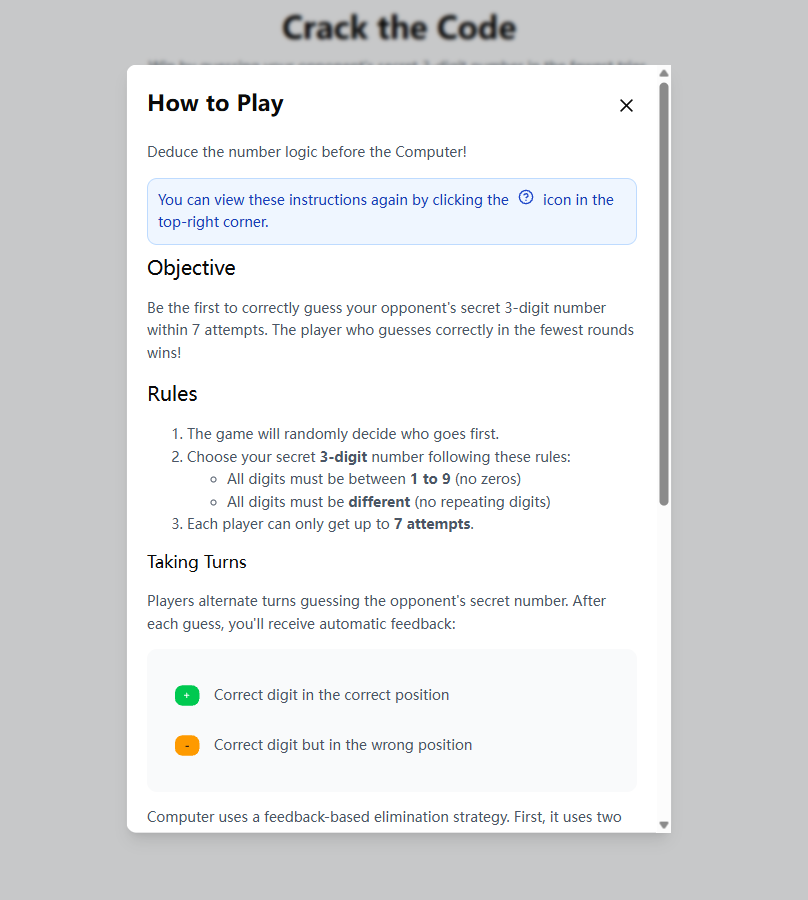
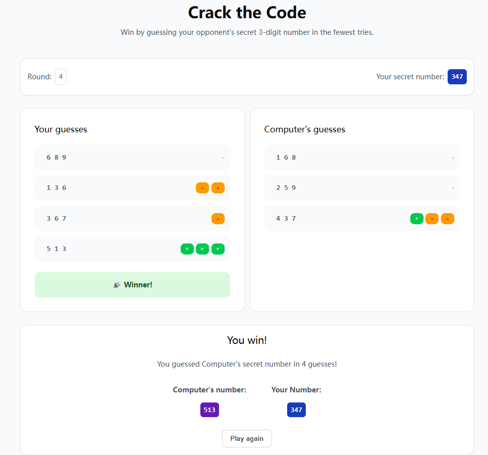

UX CASE STUDY
Crack the Code
A Bulls and Cows style web game where each round turns feedback into the next best guess. The goal was to make the loop feel readable: clear feedback, clear next step, and a stable game state.
My role
Interaction + UI logic. I helped define the feedback model (exact vs misplaced), implemented the round loop, and made sure the interface always shows what changed after each guess.

Context / Problem
What the user is trying to do
- Make a guess quickly
- Understand feedback immediately
- Use that feedback to decide the next guess
- See progress and avoid getting lost mid-game
Where it can break
- Feedback is easy to misread (exact vs misplaced)
- Users forget past guesses or what changed
- State can desync (history, turns left, current guess)
- The game feels random if the logic is not explainable
Users & Core Tasks
The primary user is anyone playing a quick logic game in the browser. Core tasks are guessing, reading feedback, and using history to plan the next step.
Constraints / Environment
- Runs in-browser with lightweight UI components
- Four-character code with no repeated digits, from 1 to 9
- Feedback must be consistent and trustworthy every round
- Need a clear reset and mode switch without losing the user
Research / Evidence or Reasoning
We treated the game as a feedback system. The UI is only useful if the feedback is unambiguous and the state stays consistent. We also compared two guessing approaches for the computer mode: a random strategy vs. a feedback filtering strategy.

Key takeaway
If the interface shows exact vs misplaced clearly, and the computer follows the same feedback logic, the game feels fair and learnable.
Screens


Key Interaction Decisions
Make feedback scannable
Each round returns two signals: exact matches and misplaced matches. Instead of text-heavy explanations, the UI uses simple, repeated visuals so users can scan and move.
Exact
Misplaced
Keep the mental model stable
The layout keeps the same structure across the whole session: input, submit, feedback, and history. When something changes, it changes in one place.
- History list shows the guess and feedback together
- Turns are visible so users can pace risk vs certainty
- Reset and help are always available
Game flow
The interaction is one tight loop: guess, validate, show feedback, update state, repeat. This helped keep both player mode and computer mode consistent.

Outcome
Player experience
- Clear round-by-round feedback (exact vs misplaced)
- History keeps progress visible
- Stable state: no surprises when switching actions
System behavior
- Computer mode filters candidates based on feedback
- Designed to converge within a small number of turns
- Logic and UI stay aligned so outcomes feel fair
What I learned
Even a small game becomes confusing if feedback or state is inconsistent. Building the loop forced me to treat UI as a contract: every round must be explainable, repeatable, and easy to recover from.